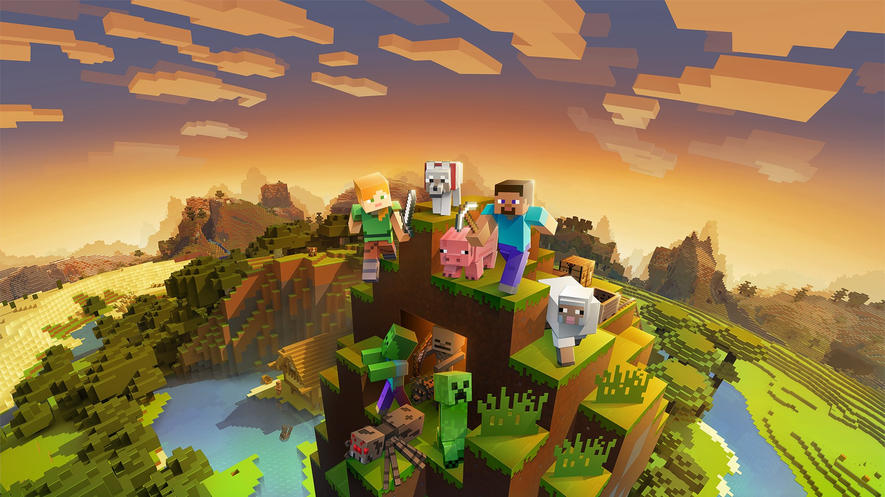

🧙 Minecraft

Género: Sandbox / Supervivencia / Mundo abierto
Desarrolladora: Mojang Studios (originalmente independiente, ahora propiedad de Microsoft)
Creador: Markus "Notch" Persson
Fecha de lanzamiento oficial: 18 de noviembre de 2011
Plataformas: PC, PlayStation, Xbox, Nintendo Switch, móviles, y prácticamente cualquier dispositivo con pantalla
Ventas totales: Más de 350 millones de copias (el juego más vendido de la historia)
📖 ¿Qué es Minecraft?
Minecraft es el videojuego más vendido de todos los tiempos, según Guinness World Records. Es un juego sandbox donde todo está compuesto por bloques cúbicos que los jugadores pueden romper, recolectar y colocar para construir prácticamente cualquier cosa que imaginen. No hay un objetivo principal obligatorio: cada jugador decide qué hacer, ya sea construir castillos enormes, explorar mazmorras, sobrevivir a monstruos o simplemente decorar su casa virtual.
🎮 ¿Cómo nació Minecraft?
El 10 de mayo de 2009, el programador sueco Markus Persson comenzó a trabajar en lo que sería Minecraft, inspirándose en juegos como Dwarf Fortress, Dungeon Keeper y especialmente Infiniminer, un juego indie con una estética similar. En solo seis días, Persson tenía lista una versión jugable que publicó en un foro. La estrategia comercial era vender el juego en desarrollo, pagando por una versión "incompleta" mientras se añadían funciones. Esto no solo financió el proyecto, sino que creó una comunidad leal que daba feedback constante.
El nombre original del proyecto era "Cave Game". Luego pasó a llamarse "Minecraft: Order of the Stone", y finalmente se acortó al nombre que todos conocemos hoy. La versión completa se lanzó oficialmente el 18 de noviembre de 2011, con un crecimiento imparable que atrapó a jugadores de todas las edades.
👤 El creador: Markus "Notch" Persson
Persson era un desarrollador autodidacta que aprendió a programar a los siete años y creó su primer juego a los ocho. Antes de Minecraft, trabajaba en King (la empresa de Candy Crush), pero dedicaba su tiempo libre a desarrollar juegos independientes.
En diciembre de 2011, Persson entregó las riendas del desarrollo a Jens "Jeb" Bergensten para alejarse del centro de atención. La fama masiva le causó una presión insoportable. En 2014, Mojang Studios (la empresa que fundó) fue adquirida por Microsoft por 2.500 millones de dólares. Persson afirmó que no lo hizo por dinero, sino "por su cordura", sintiendo que había perdido la conexión con su comunidad. Tras la venta, se retiró del desarrollo de videojuegos y lleva una vida reservada.
🎮 Modos de juego principales
- Supervivencia: Recolectas recursos, construyes refugios y combates monstruos que aparecen por la noche. Tienes una barra de salud y otra de hambre que debes mantener.
- Creativo: Tienes acceso ilimitado a todos los bloques y herramientas, vuelas libremente, y no puedes morir. Es el modo favorito de los constructores.
- Aventura: Similar a supervivencia, pero con reglas especiales para mapas creados por jugadores. Ideal para jugar niveles diseñados por la comunidad.
- Espectador: Puedes volar a través de paredes y ver el mundo desde la perspectiva de cualquier criatura.
- Hardcore: El modo más difícil: si mueres, el mundo se borra para siempre y pierdes todo tu progreso.
🏆 ¿Por qué es el juego más vendido de la historia?
- Está disponible en absolutamente todas las plataformas imaginables: PC, móviles, PlayStation, Xbox, Nintendo Switch, y hasta en escuelas.
- No requiere hardware potente; corre incluso en ordenadores viejos o dispositivos básicos.
- La libertad creativa es total: no hay un único objetivo, cada jugador se inventa su propia experiencia.
- Su comunidad es inmensa y muy activa, con millones de jugadores que siguen creando contenido, mods, mapas y servidores personalizados más de una década después.
- Mojang sigue añadiendo actualizaciones gratuitas periódicas con nuevos biomas, criaturas y mecánicas.
📈 Récords y cifras impresionantes
- +350 millones de copias vendidas en todo el mundo, el juego más vendido de la historia.
- El mapa de Minecraft tiene una extensión máxima de más de 60 millones de bloques por lado, lo que equivale a unos 4.000 millones de kilómetros cuadrados, más de ocho veces la superficie de la Tierra.
- 2.500 millones de dólares pagó Microsoft por Mojang en 2014.
- Un tercio de los primeros jugadores descubrieron el juego gracias a YouTube y gameplays, no al marketing tradicional.
- Es uno de los juegos más longevos con una comunidad activa, cumpliendo 15 años en 2026.
👥 Personajes y criaturas (Mobs)
🐉 Jefes principales
- Enderdragón: El jefe final del juego. Es un dragón negro con ojos morados que habita en "El End", una dimensión alternativa. Es inteligente y destruye todos los bloques que toca, excepto los generados naturalmente. Derrotarlo permite acceder al poema final del juego, uno de los momentos más míticos de Minecraft.
- Wither: Un jefe invocado por el jugador con almas de Wither y arena de almas. Es una criatura voladora de tres cabezas que dispara proyectiles explosivos. Al derrotarlo, dropea una estrella del Nether, necesaria para crear beacons (faros que dan poderes a los jugadores cercanos).
😈 Criaturas hostiles icónicas
- Creeper: Posiblemente la criatura más emblemática de Minecraft. Es una criatura verde que se acerca sigilosamente al jugador y explota al estar cerca. Su origen fue un error de programación: Persson intentaba crear un cerdo, se equivocó en las dimensiones, y así nació el monstruo más famoso del juego.
- Enderman: Criatura alta, negra, de ojos morados. Es neutral: si lo miras directamente a los ojos, se enfurece y te ataca. Puede mover bloques y teletransportarse. El sonido de su teletransportación es de los más inquietantes del juego.
- Esqueleto: Enemigo armado con un arco que ataca a distancia. Aproximadamente el 11% de los esqueletos son zurdos, un detalle curioso que añade variedad.
- Zombi: El enemigo básico. Aparece por la noche o en cuevas, y ataca cuerpo a cuerpo.
- Araña: Puede escalar paredes y es neutral durante el día pero hostil por la noche.
- Ghast: Una criatura flotante que vive en el Nether. Dispara bolas de fuego y emite un sonido característico que, curiosamente, se originó del gato del compositor C418 al despertarse de una siesta.
- Bruja: Lanza pociones venenosas al jugador. Usa un sombrero negro y una túnica morada.
🐾 Criaturas neutrales y pacíficas
- Steve y Alex: Los avatares por defecto del jugador. Steve (hombre moreno de camisa azul) y Alex (mujer rubia de ojos verdes). Los jugadores pueden personalizar su aspecto libremente.
- Golem de Hierro: Criatura gigante que protege a los aldeanos y al jugador de las amenazas. Puede ser construido por el jugador colocando bloques de hierro en forma de T.
- Lobo: Neutral si no lo atacas, pero si lo domesticas con huesos, se convierte en tu compañero fiel que te protege de monstruos. Los gatos también son domesticables y ahuyentan creepers.
- Oveja, vaca, cerdo, gallina: Animales pacíficos que proporcionan comida y recursos. Se pueden criar con sus respectivos alimentos.
- Endermite, Pez globo, Caballo, Llama: Otras criaturas que añaden variedad al mundo.
📚 Minecraft: Education Edition
En 2016, Microsoft lanzó Minecraft: Education Edition, una versión adaptada específicamente para el aprendizaje en el aula. Se utiliza con una cuenta de Office 365 e incluye herramientas educativas como pizarras, personajes interactivos, y bloques especiales que representan la tabla periódica. Los profesores pueden crear lecciones de matemáticas, historia, geografía y ciencias dentro del entorno de Minecraft.
Desde 2013, Minecraft es asignatura obligatoria en el instituto Viktor Rydberg de Estocolmo para estudiantes mayores de 13 años. En palabras de un profesor: "Con Minecraft aprenden sobre planificación urbana, problemas ambientales, cómo hacer las cosas e incluso cómo planificar el futuro".
Incluso la NASA ha utilizado Minecraft para enseñar conceptos de exploración espacial. En Dinamarca, investigadores crearon una réplica a escala de todo el país dentro del juego para recopilar datos geográficos.
🎬 La película (2025)
En 2025 se estrenó la esperada película de Minecraft, con Jason Momoa (Aquaman) y Jack Black (voz de Steve) en los papeles principales. La película llevó el mundo de los bloques a la gran pantalla con una mezcla de live-action y animación, alcanzando un gran éxito en taquilla y atrayendo tanto a nuevos jugadores como a los fans de toda la vida.
La película ha dado lugar a colaboraciones inéditas, como una edición especial de combos para adultos en McDonald's (en algunos países) que incluía coleccionables exclusivos y hasta ítems desbloqueables dentro del juego.
🔮 Curiosidades que quizás no conocías
- Los ghasts suenan como el gato de C418: El productor musical de Minecraft grabó a su gato despertándose de una siesta, y ese maullido distorsionado se convirtió en el grito de los ghasts.
- Los Enderman hablan al revés: Los sonidos de Enderman son frases en inglés dichas al revés, como "here" (aquí) o "what's up" (qué ocurre).
- Pantalla de título errónea: En 1 de cada 10,000 veces que abres el juego, el título dice "Minceraft" en lugar de "Minecraft".
- Los creepers nacieron de un error: Persson quería crear un cerdo, pero mezcló las dimensiones y el resultado fue el monstruo más famoso del juego.
- El mundo es prácticamente infinito: La superficie jugable supera los 60 millones de bloques por lado, lo que equivale a más de ocho veces la superficie de la Tierra.
🌟 Impacto cultural
Minecraft es más que un videojuego: es un fenómeno cultural. Ha generado su propio lenguaje de programación visual para comandos, utilizado por escuelas para enseñar lógica computacional. Existe una convención anual llamada MineCon donde se reúnen miles de fans. El juego ha sido utilizado por artistas, arquitectos y educadores de todo el mundo.
Además, ha creado una generación de youtubers que construyeron sus carreras alrededor del juego, desde gameplays hasta tutoriales de construcciones épicas. La comunidad de modders también es impresionante, creando desde nuevos biomas hasta conversiones completas del juego.
Minecraft sigue vigente y evolucionando constantemente. Entre películas, colaboraciones con grandes marcas, actualizaciones periódicas y nuevas formas de jugar, el universo de bloques sigue sumando generaciones enteras de jugadores que, día a día, lo reinventan a su manera.
⭐ Puntuación
Puntuación general: ⭐⭐⭐⭐⭐ (5/5 - El juego más vendido y uno de los más influyentes de la historia)
← Volver a la lista de juegos